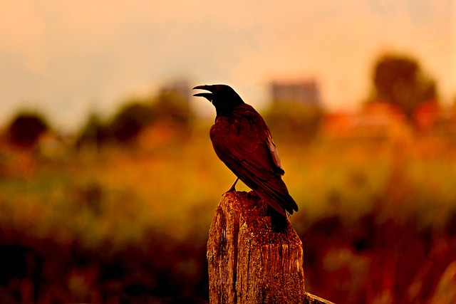
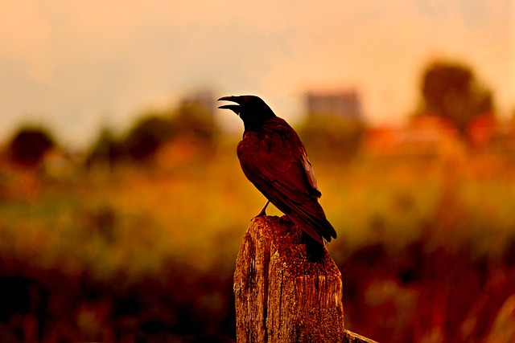

The hooded crow (Corvus cornix), also called the scald-crow or hoodie,[1] is a Eurasian bird species in the genus Corvus. Widely distributed, it is found across Northern, Eastern, and Southeastern Europe, as well as parts of the Middle East. It is an ashy grey bird with black head, throat, wings, tail, and thigh feathers, as well as a black bill, eyes, and feet. Like other corvids, it is an omnivorous and opportunistic forager and feeder. The hooded crow is so similar in morphology and habits to the carrion crow (Corvus corone) that for many years they were considered by most authorities to be geographical races of one species. Hybridization observed where their ranges overlapped added weight to this view. However, since 2002, the hooded crow has been elevated to full species status after closer observation; the hybridisation was less than expected and hybrids had decreased vigour.[2][3] Within the hooded crow species, four subspecies are recognized, with one, the Mesopotamian crow, possibly distinct enough to warrant species status itself. Read More
 

| Europe | Asia | Africa | |
|---|---|---|---|
| Cape crow | Yes | ||
| Hooded crow | Yes | Yes | Yes |
| Carrion crow | Yes | Yes |